1. Qual a minha cor favorita?
Amarelo
Roxo
Verde
Azul
Cinza
2. Gosto de todos esses jogos, mas o favorito é:
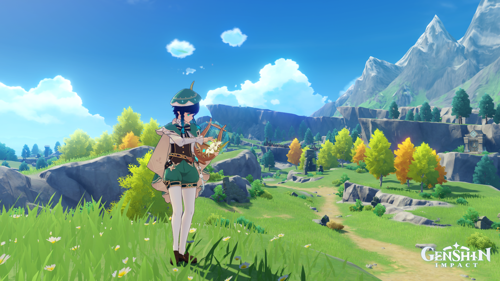 Genshin Impact
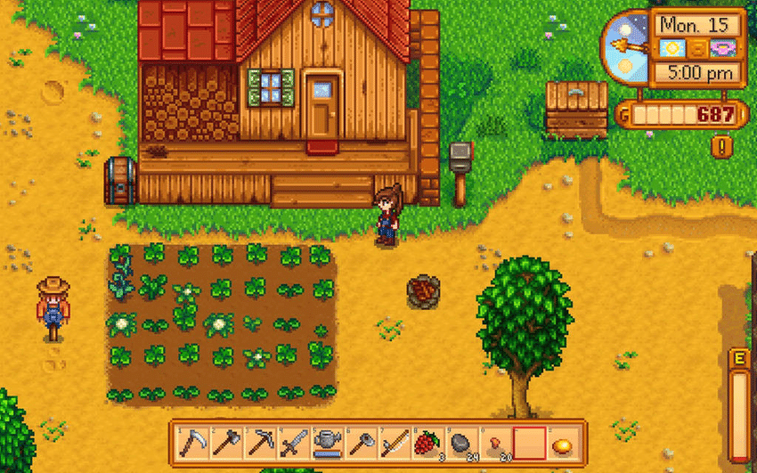 Stardew Valley
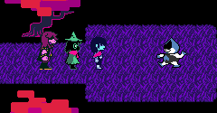 Undertale/Deltarune
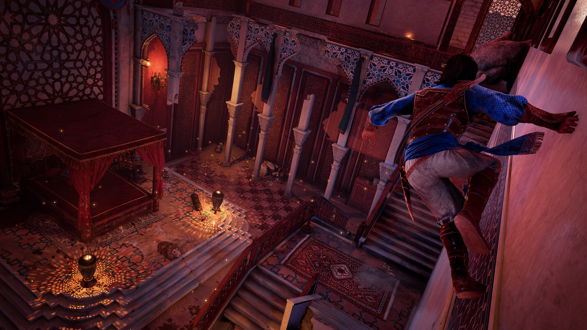 Príncipe da Pérsia: Areias do Tempo
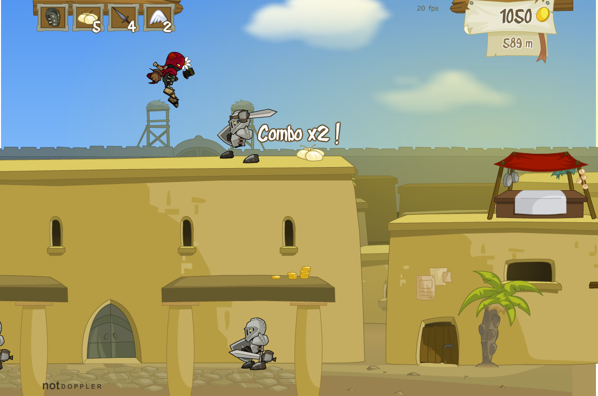 Rogue Soul 1 ou "Alma Rebelde"
3. Qual comida eu mais gosto?
Sushi
Panetone
Strogonoff
Lasanha
Salada
4. Qual meu filme musical favorito?
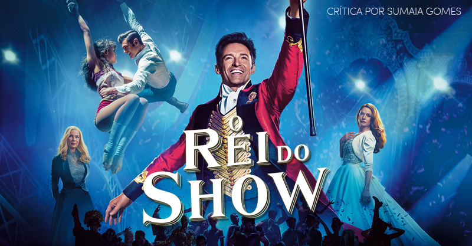 Rei do Show
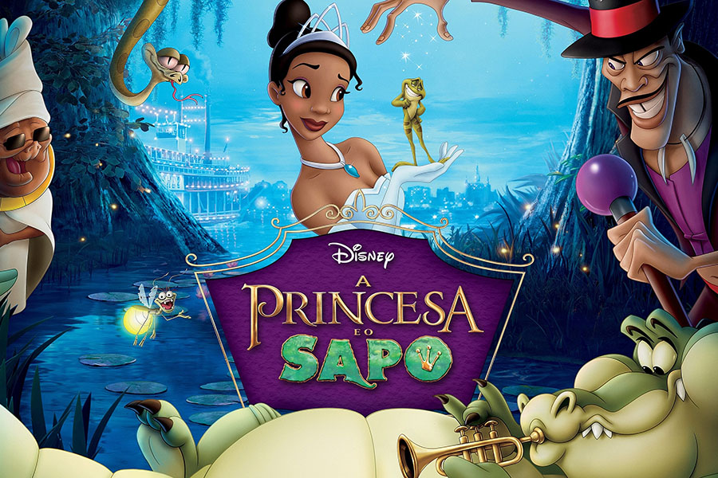 Princesa e o Sapo
Teen Beach Movie
Mogli (Junglebook)
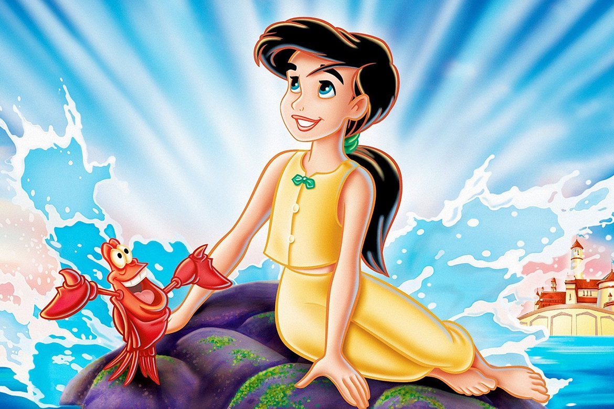 A Pequena Sereia 2
5. Qual meu filme favorito de todos os tempos?
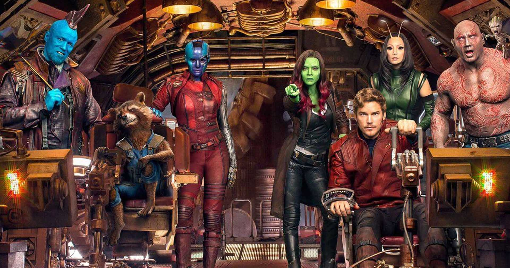 Guardiões da Galáxia
Show de Truman
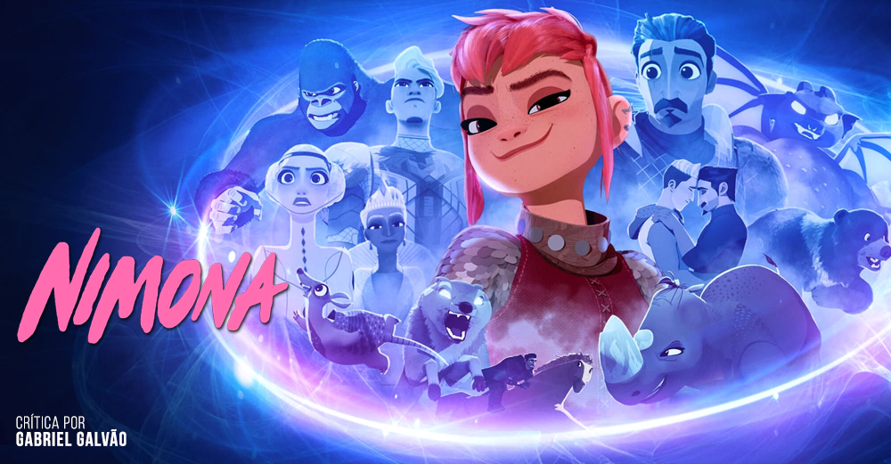 Nimona
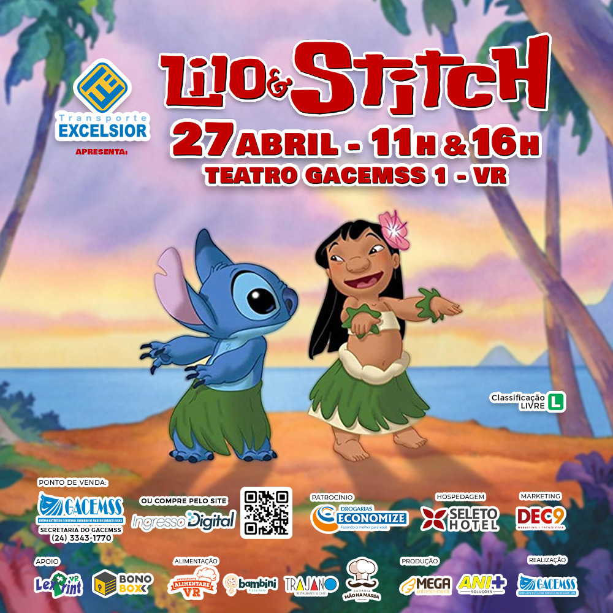 Lilo e Stitch
A Princesa e o Sapo
6. Qual artista ou banda eu mais gosto?
Lady Gaga
Djavan
Gabriel o Pensador
Twenty One Pilots
Imagine Dragons
7. Me conhecendo, em qual desses chorei numa cena engraçada?
Luca
Desencanto
Nimona
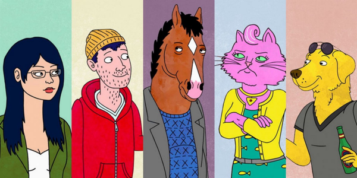 Bojack Horseman
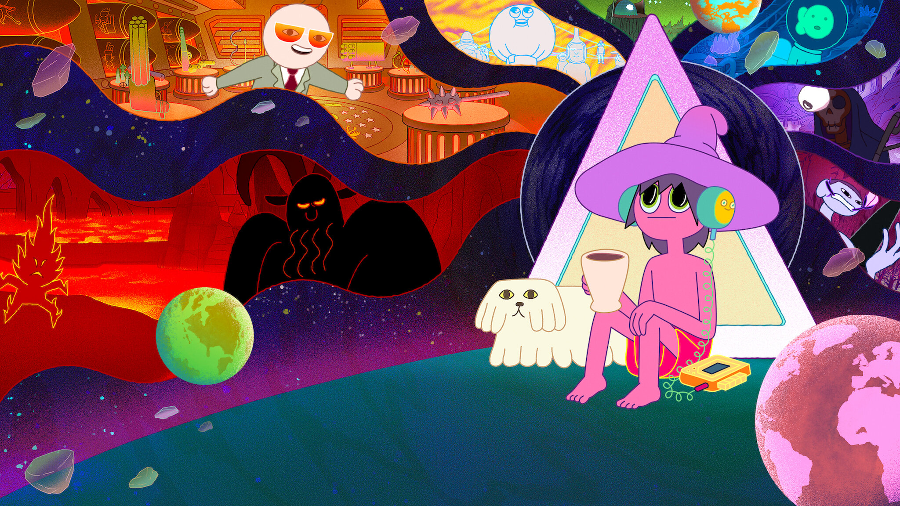 The Midnight Gospel
8. Me conhecendo, qual dessas eu NÃO usaria?
1
2
3
4
5
9. Qual é meu tipo de música favorito?
Eletrônica
K-pop
MPB
Instrumental
Líricas
10. Se Pokémons existissem, eu...?
Seria um treinador comum
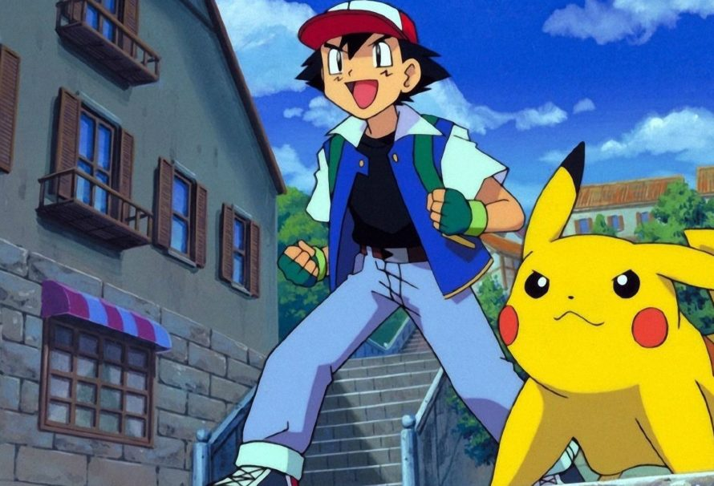 Seria um treinador Pokémon
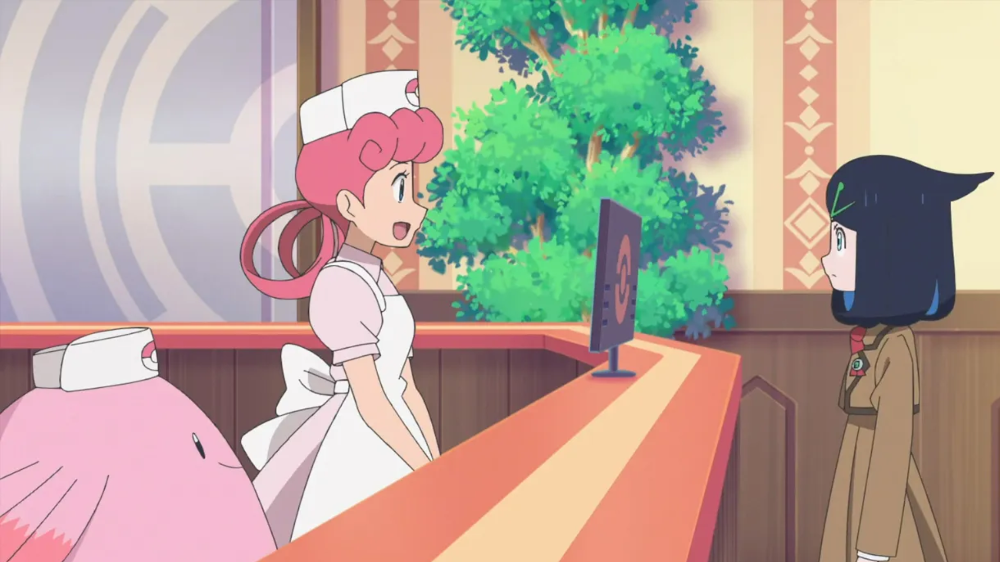 Seria um veterinário
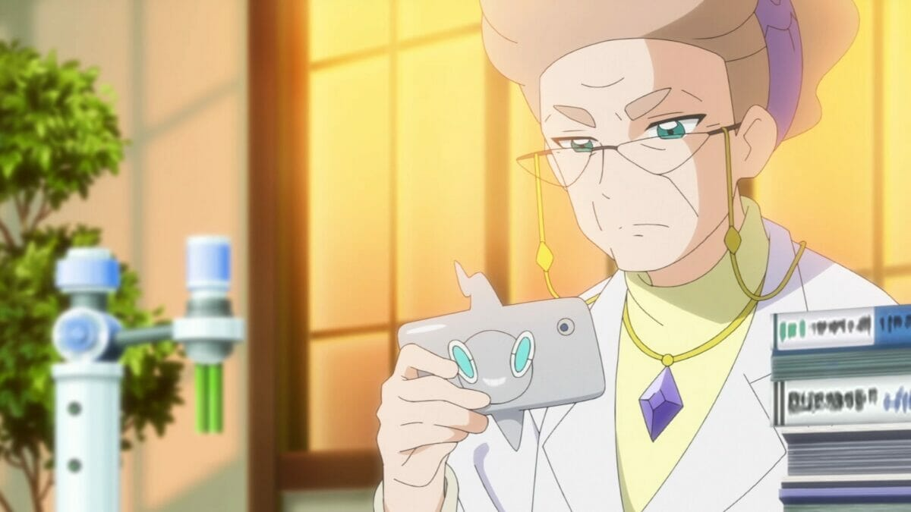 Seria um professor Pokémon
Teria um de estimação
11. Qual dessas eu me sentiria confortável em usar?
1
2
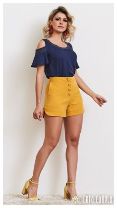 3
4
5
Próxima